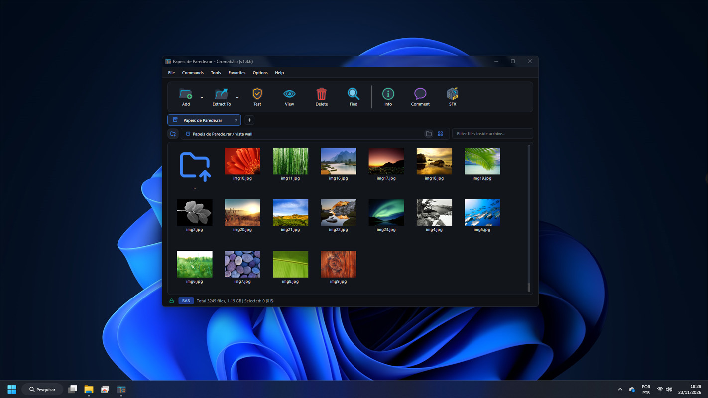
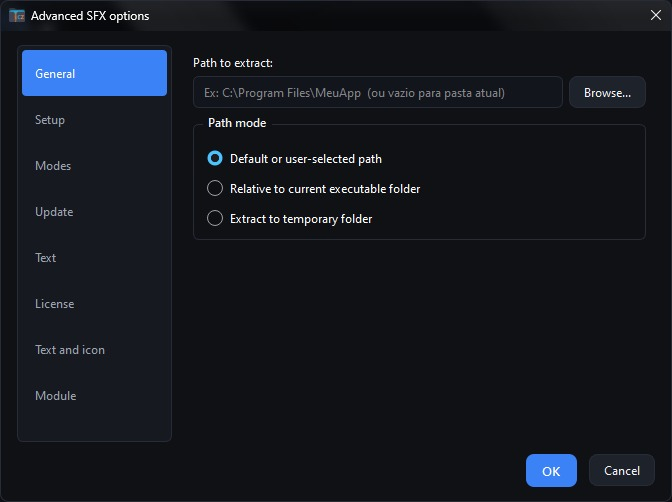
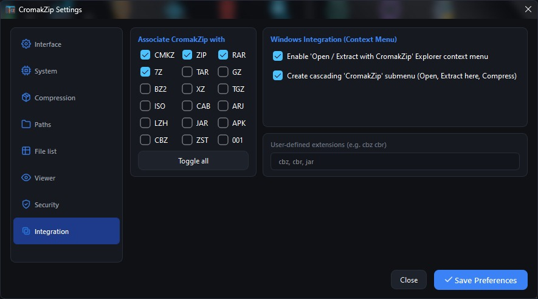
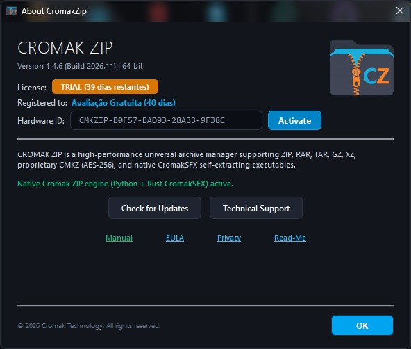

Cromak ZIP
Preview Images Inside Archives Without Extracting. Native Rust Compression & AES-256-GCM Security.
Stop clicking files one by one or extracting huge folders just to find a photo or texture. Open archives across 18 formats (.cmkz, .zip, .rar, .7z, .iso, .zst) with an in-RAM thumbnail grid (PNG, JPG, BMP, TGA, PSD, ICO, DDS, WEBP, SVG), browser-style tabs, bidirectional drag & drop, and the native CromakSFX .exe builder.

What is a .CMKZ File (Cromak Archive Format)?
The .cmkz file extension (Cromak Archive) is the proprietary high-efficiency archive and encryption format created exclusively by Cromak Technology for Cromak ZIP. It is engineered from the ground up to replace slow single-threaded legacy formats and weak encryption schemes.
Every .cmkz archive is powered by the native Rust cmkz.dll engine (multi-threaded Zstd) with extension-grouped Solid Mode, achieving significantly smaller files on source code, JSON, and documents, protected by authenticated AES-256-GCM encryption and dual CRC32 + SHA-256 integrity checks.
| Technical Property (.CMKZ) | Official Cromak Technology Specification |
|---|---|
| Extension & Official Name | .cmkz — Cromak Archive Format v1.0 (Arquivo do CromakZIP) |
| Binary Signature (Magic Bytes) | 43 4D 4B 5A 01 00 (CMKZ\x01\x00) |
| Compression Engine | Native Rust cmkz.dll · Multi-Threaded Zstd (chunks ≥ 256 KB) + Solid Mode (16 MB blocks) + smart store fallback |
| Encryption & Key Derivation | Authenticated AES-256-GCM per entry/block + PBKDF2-HMAC-SHA256 (100,000 iterations, 16-byte Salt) |
| Integrity & Index | Compressed structured index with dual CRC32 + SHA-256 verification |
Cromak ZIP vs. Legacy Archivers
A direct feature and performance comparison between classic tools and Cromak's Rust + PyQt6 architecture.
| Features & Capabilities | Legacy Archivers | Cromak ZIP v1.4.6 |
|---|---|---|
| Multi-Threaded Native Engine | Standard Deflate / slower LZMA | Rust cmkz.dll (Multi-Threaded Zstd + Solid Mode) |
| Grid Image Thumbnails | Text-only list or disk extraction | Real 96px/140px thumbnails 100% in RAM (0 disk writes) |
| Encryption & Integrity | ZipCrypto or basic AES | Authenticated AES-256-GCM + PBKDF2 + CRC32 + SHA-256 |
| Self-Extracting (.EXE) | Dated 90s dialog | Native Rust Win32 CromakSFX (~273 KB) with EULA & Scripts |
| Lifetime License | $23.95 – $34.22 USD | $19.90 USD (20% OFF · Lifetime) |
4 Core Architecture Pillars
-
Native cmkz.dll Engine (Rust + Zstd)
Compact native library (~611 KB) featuring multi-core compression, extension-grouped Solid Mode, and smart
storefallback on incompressible media. -
Privacy & Auto-Temp Cleanup
Grid thumbnails decode in RAM without touching disk. Any file opened in the standalone viewer is automatically wiped from
%TEMP%\CromakZip_Previewon launch and exit.
-
CromakSFX (.exe) Rust Builder
Turn any archive into a standalone Windows installer with silent modes, custom EULA, and pre/post-extraction command execution.
-
Multi-Tab UI & 18 Formats
Open multiple archives in tabs (single-instance IPC), customize all 19 toolbar buttons, and associate any format in Windows Explorer with one click.
Explore Cromak ZIP Inside
Real screenshots of v1.4.6 showing in-RAM image thumbnails, details view, smart context menu, and CromakSFX.

Instant Thumbnail Grid
Preview photos, textures, and icons directly inside .cmkz, .zip, .rar, and .7z archives without extracting anything to disk. Batch-decoded in RAM with support for PNG, JPG, BMP, TGA, PSD, ICO, DDS, WEBP, and SVG.

Detailed List & Folder Tree
Inspect large archives across browser-style tabs with full columns for original size, compressed size, compression ratio, CRC32 checksum, and instant filename or extension filtering.

Windows Integration & 18 Formats
Smart Windows Explorer context menu that adapts automatically to compressed archives versus regular files and folders, with multi-selection batching, custom file icons, and 18 supported formats.

CromakSFX Self-Extractor
Turn any archive into a standalone Windows .exe installer powered by a native Rust Win32 stub, complete with custom window branding, default target folder, silent mode, and post-extract commands.

Multi-Core Benchmark & Pro Progress
Measure real-world compression and decompression throughput in MB/s on the Rust cmkz.dll engine and track heavy tasks with dual progress bars, live ratio, Pause/Resume, and Background mode.

Official HWID Licensing & Privacy
Enjoy a full-featured 40-day non-blocking evaluation, lifetime SHA-512 hardware-bound activation, 11 built-in interface languages, and 100% local processing with zero telemetry.
Simple, Fair Licensing
Evaluate every feature free for 40 days, or unlock your perpetual lifetime license at 20% off.
40-Day Free Trial
- All features unlocked for 40 days
- Native
cmkz.dll(multi-threaded Zstd) - Read & extract 18 archive formats
- 100% in-RAM image thumbnails
- Non-blocking access to your archives
- Displays license reminder on startup
- Commercial use requires PRO after trial
Perpetual Lifetime PRO
- Perpetual Lifetime License (Pay Once)
- Zero Trial Prompts or Nag Screens
- Commercial, Corporate & Pro Use Included
- Native
cmkz.dll+ Solid Mode + AES-256-GCM - Royalty-Free CromakSFX (.exe) Builder
- Continuous 1.x updates
- Priority HWID support
Send your HWID code to support after purchase
Available in 11 Native Languages
Both the application and the official Windows installer support 11 languages out of the box.
Frequently Asked Questions (FAQ)
What is a .CMKZ file and how do I open it?
A .cmkz file is the official compressed archive format of Cromak ZIP (Cromak Archive), using multi-threaded Zstd compression via cmkz.dll and optional AES-256-GCM encryption. To open, preview, or extract .cmkz files on Windows 10 or 11, install the official Cromak ZIP application.
Does Cromak ZIP require any external dependencies on the client PC?
None at all! The official installer bundles every runtime library, including native cmkz.dll and CromakSFX.sfx. Just install and run.
What happens after the 40-day evaluation ends?
You never lose access to your archives: Cromak ZIP still lets you open and extract files while displaying a license reminder. Continued or commercial use requires a PRO license.
How do I activate my PRO license using the HWID code?
In the activation dialog, click Copy HWID Code and send that code (CMKZIP-...) to Cromak Technology support with your receipt. We will issue your unique activation key to paste into the Serial field.